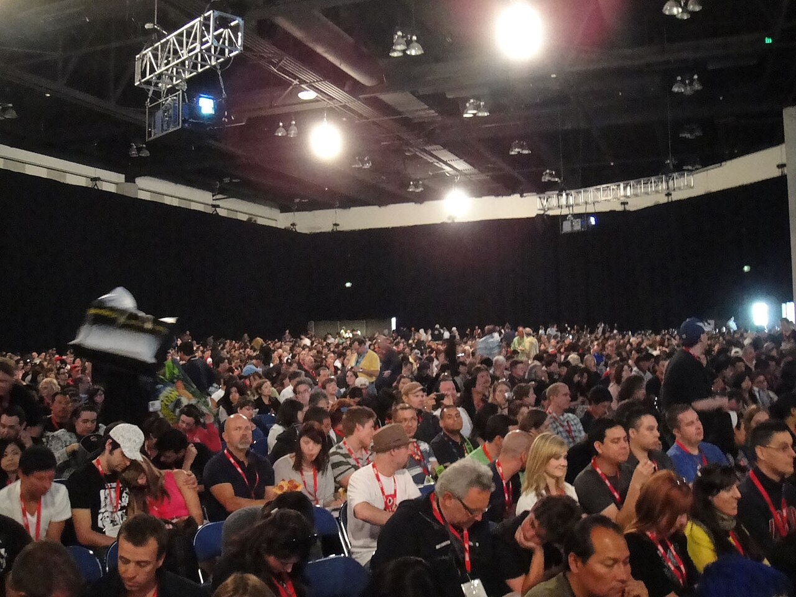
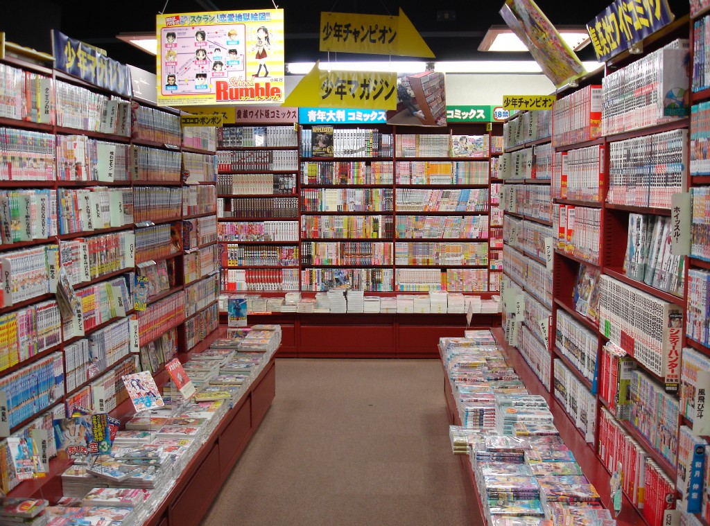
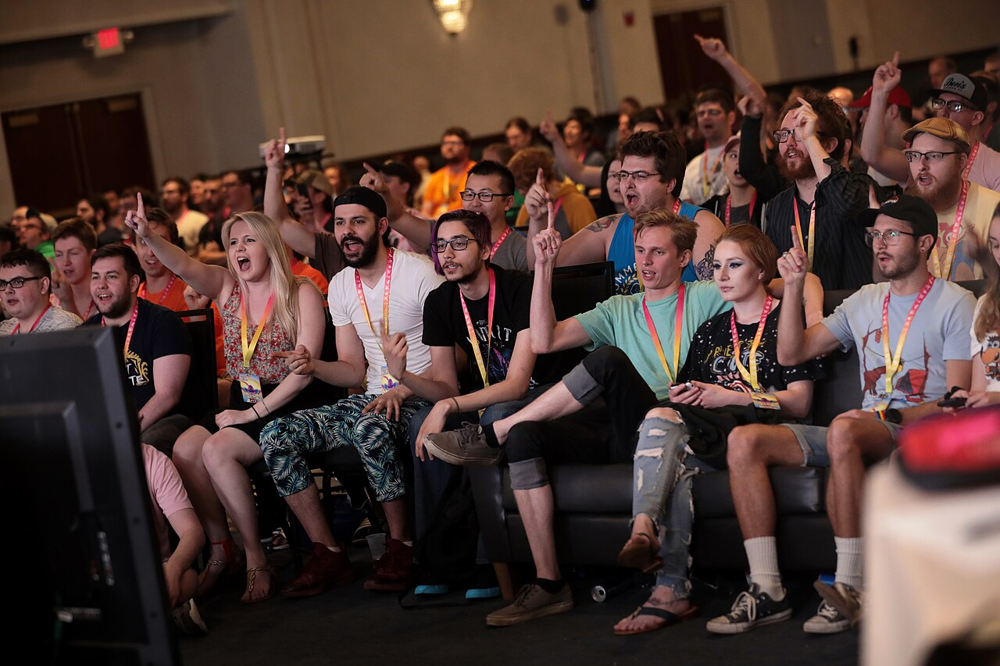
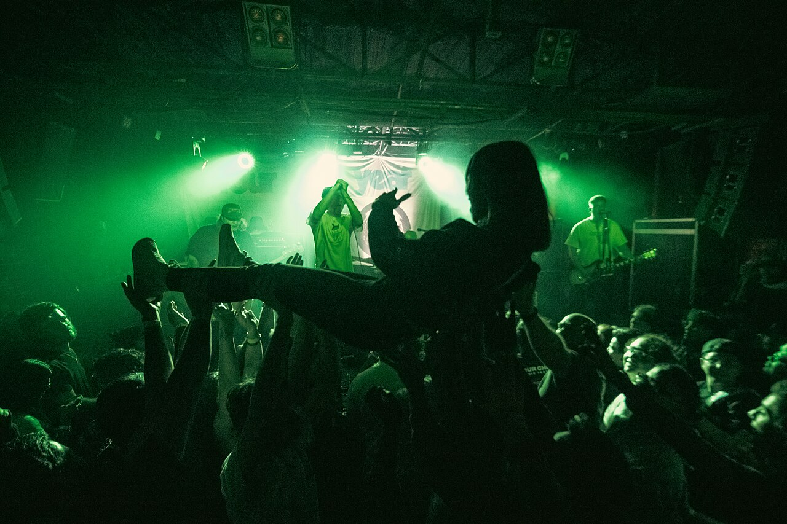
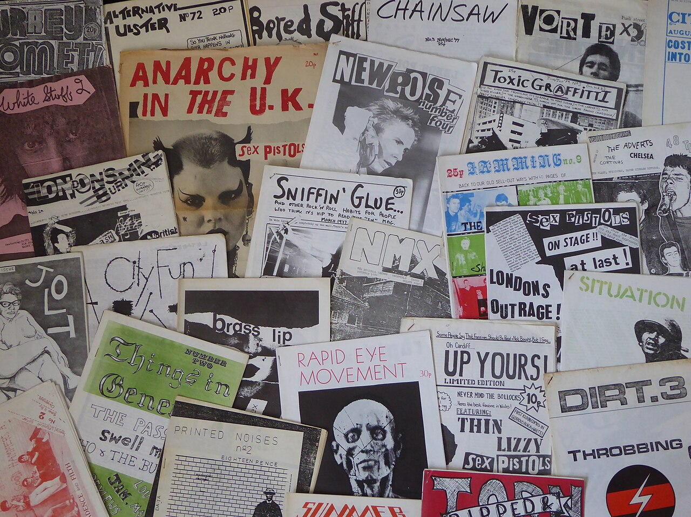
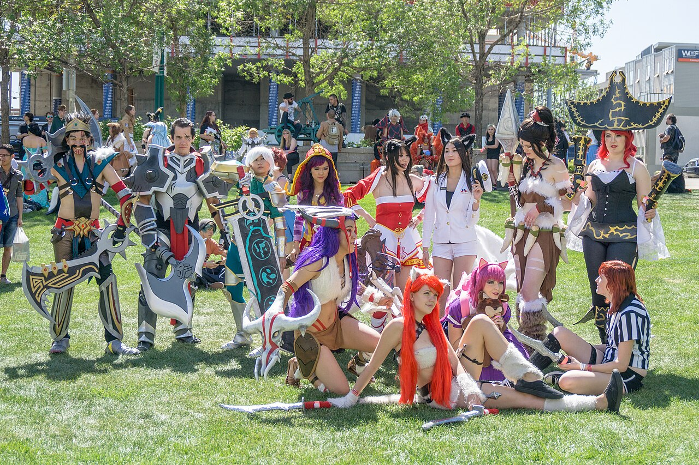
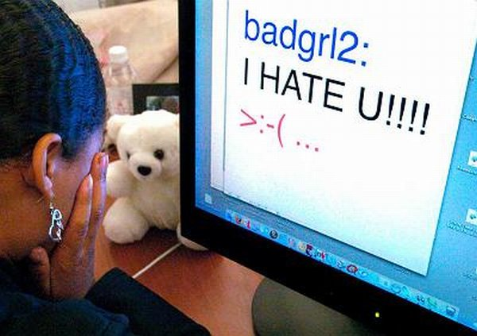
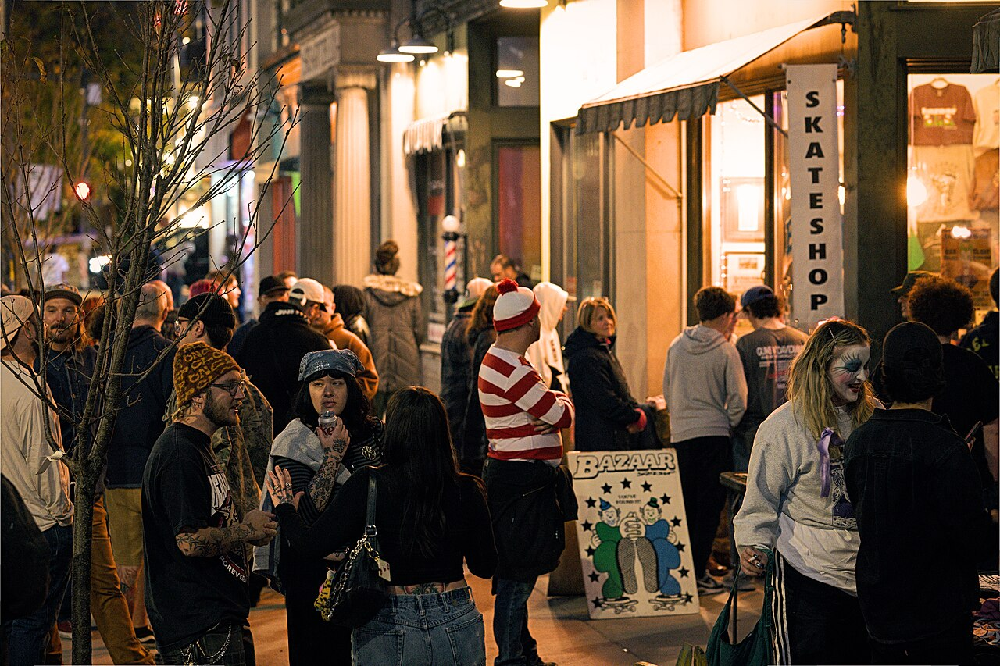

Fandoms & Communities
How do fandoms and communities influence the things they're built around and the people who are part of them?

// thesis
Fandoms are more than groups of people who share the same interests; they actively shape the media, ideas, and culture surrounding those interests while influencing their members' identities, relationships, and behaviors. Although these communities can create belonging and inspire creativity, they can also encourage gatekeeping and social pressure.
>What even is a fandom?
The word "fan" most likely started as a shortened version of "fanatic" back in seventeenth century England (Purdy). Today it covers a lot, from sports teams to celebrities to whole fictional universes. One idea we liked is that fans are looking for "Promised Lands," other worlds they can escape away from everyday life (Purdy).
In our project we each looked at communities we associate ourselves with: Animanga, indie and cult classic video games, and the local punk scene. We each had previously interviewed someone from our own respective communities. From the outside, our communities seem like they have no correlation, but a lot of the same things kept coming up when we compared what we found.
This page is for students like us who are already part of a fandom, or who are thinking about getting into one.
#The communities

>Animanga
The term “Animanga” is a combination of two words, Anime and Manga. Anime TV shows are Japanese animated TV series that are in most cases directly adapted from the manga, which is a Japanese style of comic books. Anime and manga have both grown significantly in popularity over the past few years, especially in America and other countries they didn't originate from.
A lot of the community happens at conventions, and some conventions focus only on anime and manga (Purdy). One of the biggest gatherings for anime and manga fans in America is Anime Expo in Los Angeles. Fans also talk online through forums, Discord servers, fan wikis, fan art, and everyday social media platforms like TikTok, Instagram, Facebook etc.
Corey interviewed Josh, who has been part of the manga community for years. Josh never set out to learn how the community talks. He picked up terms like "shonen," "seinen," and "isekai" by reading manga and talking with other fans: "When you read enough series and interact with other fans, you naturally start picking up on the terms and different ways people discuss things" (Vance).

>Indie & cult classic games
Indie and cult classic game communities are groups of players brought together by a love for games made outside of big studios, or older games that never became mainstream hits but gained a loyal fanbase over time. These communities support small developers, share fan art and mods, and keep older games alive long after their release. They are welcoming spaces for anyone who values creativity and originality over big budgets.
Jeffrey interviewed Fazzy, who is part of the Deltarune, Yume Nikki and Rain World communities. She mostly learned how people talk there by reading and listening instead of posting. She said, "I think I just passively accumulate that type of slang" (Landgrave). She writes fanfiction, reviews, and is working on a video analyzing Deltarune. Her advice for writing was to just get something down first: "Most of my writing is rewriting, I'd say" (Landgrave).

>Local music scenes
Local music scenes are communities where people come together due to a common desire to belong, a passion for live music, and common moral values. They are spaces of acceptance and understanding, and these music scenes are often places where people can express themselves and openly be their most authentic selves without fear of judgement. They welcome just about anybody who enjoys punk music and shares the values of the punk ethos.
Michael interviewed Xander and Jude Havens from Gath, a band in the Louisville punk scene. They write songs by thinking about bands they like and how they would play it (Bishop). Many artists involved in the music scene offer their services by making posters, which are shared to announce shows. Social media is also a common form of writing. Social media is used by bands to announce line-up changes and generate excitement for upcoming shows by sharing photos, or clips from past sets (Bishop).
>How do these relate to each other?
A manga store, speedrunning event, and punk show may not have much in common at first glance. But, when we looked through our individual papers and the sources we found, a few common ideas continued to show up: fans can influence change in the things they love, people often find belonging within the other people in their community, and the very same things bringing people together can also end up pushing people out.

>01The Influence
How fans affect the media, creators, and stories they care about.
Fans don't just watch, play, or listen. They interact with each other, theorize, and create art like paintings, fanfiction, etc., and all that changes how other people see the original thing the community is based on.
- In 1968 NBC was going to cancel Star Trek, but a letter-writing campaign from fans kept it on the air for another year (Purdy).
- Super Metroid fans have made close to 100 playable hacks of the game. They share works in progress and give each other feedback, which keeps the game alive years after it came out (Earl).
- Fazzy tells newcomers to play a game on their own before reading what the community says, because other people's ideas can shape what you notice before you form your own (Landgrave).
- The Seattle record label Sub Pop started out as a fanzine about an underground music scene (Bishop).

>02The Belonging
How shared interests create friendships, identities, and a sense of community.
A lot of things can shape people’s identities, from shared interests and inside jokes, to language unique to a community and friendships formed within them.
- While studying the behavior of BTS fans, conversing with other fans was found to be the biggest predictor of feeling like part of a community, and was linked to better mental wellbeing (Kim et al.).
- Some sci-fi fans rate the fan groups they belong to higher on a sense of community than the neighborhoods they live in (Anjamrooz and Ravelo).
- Fandoms focused around sources of entertainment like anime, manga, and music often are made fun of more than fandoms focused around sports, but ultimately serve the same purpose of bringing people together (Lien).
- In Jeffrey’s paper, Fazzy said that it feels validating to read a sentence full of slang that people outside of the community wouldn’t get, since it shows that you and the other person have spent time in the same circles (Landgrave).
- In Michael's paper, Xander said "one thing that brings a lot of the community together is just, just being accepting" (Bishop).
- Mirabelli says that literacy is a social practice, and you have to know the setting to understand the language (146, 149). That pretty much describes slang in all three of our communities.

>03The Other Side
How gatekeeping, online arguments, and community pressure affect fans.
Fandom influence isn't always positive. Gatekeeping, online harassment, and pressure to agree with popular opinions can make communities exclusionary.
- Toxic behavior, harassment, and exclusion can take away the belonging that fandoms are supposed to give people (Anjamrooz and Ravelo).
- Gamers who tie their identity really closely to gaming culture were more likely to show sexism, racism, and aggression. This was stronger for Call of Duty players, while for Minecraft players it was linked to more positive things (Kowert et al.).
- Some extreme K-pop fans, called "sasaeng," have stalked idols (Purdy).
- The same slang that makes members feel connected can be "incomprehensible" to someone new (Landgrave). Fazzy also said arguments about Rain World get frustrating because nobody can prove who is right (Landgrave).
- In the punk scene people call out bad behavior on social media, and music that goes against the scene's values usually isn't seen as good (Bishop). That can keep people accountable, but it also shows how much pressure there is to fit in.
>So what?
Whether it's an anime fan, someone theorizing about Deltarune, or a kid going to their first punk show, fandoms give people a place to learn a new way of talking, make things, and find people like them. Those same communities can also decide who fits in and who doesn't.
If you're part of a fandom, or thinking about joining one, it's worth paying attention to both sides. Join in, make stuff, and talk with people, but also try to be the kind of member who makes newcomers feel welcome instead of pushing them out.
Fandoms are more than groups of people who share the same interests; they actively shape the media, ideas, and culture surrounding those interests while influencing their members' identities, relationships, and behaviors. Although these communities can create belonging and inspire creativity, they can also encourage gatekeeping and social pressure.

>Works Cited
"Anime NYC 2026 4K Convention Walkthrough & Cosplay | Artist Alley, Anime & More." YouTube, uploaded by Japan Haul Time, 24 Aug. 2026, www.youtube.com/watch?v=Vfr72ByDZJo.
Anjamrooz, Yashar, and Christina Ravelo. "Fandoms as Communities of Belonging and Coping." Psychological Applications and Trends 2026, 2026, pp. 455-58, doi.org/10.36315/2026inpact103.
Bishop, Michael. "Interview with a Writer: GATH and the Louisville Scene." 8 Oct. 2026. ENGL 101, University of Louisville. Unpublished essay.
"Creators and Fans Get Their Game On at Play NYC." YouTube, uploaded by Localish, 1 Dec. 2024, www.youtube.com/watch?v=KfZC0eV5f2g.
Earl, Victoria. "Why Super Metroid's Hacking Community Is Still Going Strong." Game Developer, 24 July 2013, www.gamedeveloper.com/game-platforms/why-i-super-metroid-i-s-hacking-community-is-still-going-strong.
Kim, Min Sung, et al. "Effects of Online Fan Community Interactions on Well-Being and Sense of Virtual Community." Behavioral Sciences, vol. 13, no. 11, 2023, article 897, doi.org/10.3390/bs13110897.
Kowert, Rachel, et al. "Not Just a Game: Identity Fusion and Extremism in Gaming Cultures." Frontiers in Communication, vol. 7, 2022, article 1007128, doi.org/10.3389/fcomm.2022.1007128.
Landgrave, Jeffrey. "Writing in Cult Classic Videogame Communities." 11 Oct. 2026. ENGL 101, University of Louisville. Unpublished essay.
Lien, Amanda. "How Fandom Creates Real-Life Community | Amanda Lien | TEDxTemecula." YouTube, uploaded by TEDx Talks, 15 June 2025, www.youtube.com/watch?v=px0o8VWDfKg.
Mirabelli, Tony. "Learning to Serve: The Language and Literacy of Food Service Workers." What They Don't Learn in School: Literacy in the Lives of Urban Youth, edited by Jabari Mahiri, Peter Lang, 2004, pp. 143-62.
Purdy, Elizabeth R. "Fan Culture." EBSCO Research Starters, 2021, www.ebsco.com/research-starters/social-sciences-and-humanities/fan-culture/.
Vance, Corey. "Writing in Manga." 7 Oct. 2026. ENGL 101, University of Louisville. Unpublished essay.
Ziegenhals, Adam [@adam.ziegenhals]. "No Comply 3 at Dave Armstrong Extreme Park in Louisville, KY." Instagram, 3 Mar. 2026, www.instagram.com/reel/DVceGQuEbRC/.
// image credits (Wikimedia Commons)
- Comic-Con Hall H crowd by The Conmunity - Pop Culture Geek, CC BY 2.0
- Manga store in Japan by Doc Sleeve, CC BY-SA 3.0
- Summer Games Done Quick attendees by Gage Skidmore, CC BY-SA 2.0
- Crowdsurfing at a concert by Tyler Savitski, CC BY-SA 4.0
- 1970s fanzines by Jake from Manchester, CC BY 2.0
- League of Legends cosplayers at Animethon 2015 by IQRemix, CC BY-SA 2.0
- Dog-Piling by J_O_I_D, CC BY 2.0
- Crowd outside show between sets by Tyler Savitski, CC BY-SA 4.0